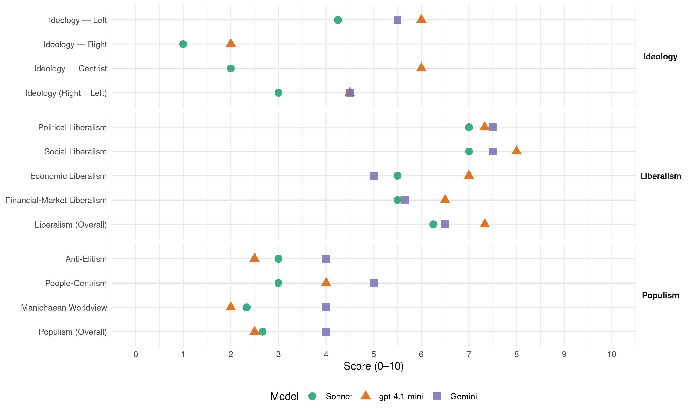

DPK (South Korea, 2020)
manifesto_id 113441_202004
Get full text: This site shows derived annotations and short verbatim quotes only. The full manifesto text is © Manifesto Project / WZB — obtain it via manifesto-project.wzb.eu using the manifesto_id above.
Headline scores
| Dimension | Sonnet | gpt-4.1-mini | Gemini |
|---|---|---|---|
| Populism (Overall) | 2.7 | 2.5 | 4.0 |
| Anti-Elitism | 3.0 | 2.5 | 4.0 |
| People-Centrism | 3.0 | 4.0 | 5.0 |
| Manichaean Worldview | 2.3 | 2.0 | 4.0 |
| Ideology (Right − Left) | 3.0 | 4.5 | 4.5 |
| Liberalism (Overall) | 6.2 | 7.3 | 6.5 |
| Political Liberalism | 7.0 | 7.3 | 7.5 |
| Social Liberalism | 7.0 | 8.0 | 7.5 |
| Economic Liberalism | 5.5 | 7.0 | 5.0 |
| Financial-Market Liberalism | 5.5 | 6.5 | 5.7 |
Evidence per dimension
Economic Liberalism
Gemini · score 6.0 · verified · chunk 1
“신기술·신산업 규제 개선 및 민간투자”
신기술·신산업 규제 개선 및 민간투자 촉진 신산업 규제혁신 로드맵 마련
Gemini · score 6.0 · verified · chunk 2
“외국인 투자를 활발하게 유치하고”
경제자유구역 혁신으로 외국인 투자를 활발하게 유치하고 지역별 핵심·중점 산업을 적극 지원하겠습니다.
Gemini · score 4.0 · verified · chunk 3
“정리해고 요건 강화, 강요된 희망퇴직 시”
맞춤형 고용지원서비스를 갖추겠습니다. 정리해고 요건 강화, 강요된 희망(명예)퇴직 시 ‘근로자대표’ 동의 법제화 정리해고
Gemini · score 4.0 · verified · chunk 4
“임대료 상한제 도입 등으로 임차인들을 보호”
주택임대차 계약갱신 요구권, 임대료 상한제 도입 등으로 임차인들을 보호하겠습니다. 현행 2년 간 임대차 기간에
gpt-4.1-mini · score 7.0 · verified · chunk 2
“증권거래세를 단계적으로 폐지하고 주식 양도소득세를 부과하도록 하여 증권에 대한 과세 제도를 합리화하겠습니다”
증권거래세를 단계적으로 폐지하고 주식 양도소득세를 부과하도록 하여 증권에 대한 과세 제도를 합리화하겠습니다. 증권거래세를 점진적으로 폐지하고 상장주식에 대해 양도소득세 과세로 전환
gpt-4.1-mini · score 7.0 · verified · chunk 3
“시장친화적인 “유인구조” 구축 사회적 기업에 대한 지원을 확대해 나가겠습니다”
신 주택매각 후 재임차(Sale & Leaseback) 프로그램 신설을 통해 금융회사가 소비자보호 책임을 인식할 수 있도록 시장친화적인 “유인구조” 구축 사회적 기업에 대한 지원을 확대해 나가겠습니다. 사회적경제 3법(사회적경제기본법, 사회적가치기본법, 사회적경제판로개척 및 공공조달지원법)의 조속한 제정을 위해 노력
gpt-4.1-mini · score 7.0 · verified · chunk 4
“‘스마트공장 확대 및 고도화로 제조현장의 경쟁력 제고’”
스마트공장 확대 및 고도화로 제조현장의 경쟁력 제고 서비스업 중소기업에도 ICT를 도입, 생산성을 선진국 수준으로 제고 소상공인 스마트상점 확산으로 소상공인의 온라인 매출 기반 확충
Sonnet · score 7.0 · verified · chunk 1
“신산업 규제혁신 로드맵 마련”
신산업 규제혁신 로드맵 마련(신기술·신산업 규제의 네거티브 전환 등) 신기술·신산업 R&D 및 설비 투자 등에 대한 세제지원 강화
Sonnet · score 5.0 · mixed · chunk 2
“경제자유구역 혁신으로 외국인 투자를 활발하게 유치”
경제자유구역 혁신으로 외국인 투자를 활발하게 유치하고 지역별 핵심·중점 산업을 적극 지원하겠습니다.
Sonnet · score 4.0 · verified · chunk 3
“사회적경제 3법의 조속한 제정을 위해 노력”
사회적경제 3법(사회적경제기본법, 사회적가치기본법, 사회적경제판로개척 및 공공조달지원법)의 조속한 제정을 위해 노력
Sonnet · score 5.0 · mixed · chunk 4
“임대료 상한제 도입 등으로 임차인들을 보호”
주택임대차 계약갱신 요구권, 임대료 상한제 도입 등으로 임차인들을 보호하겠습니다.
Financial-Market Liberalism
Gemini · score 7.0 · verified · chunk 1
“증권거래세를 단계적으로 폐지하고 주식”
증권거래세를 단계적으로 폐지하고 주식 양도소득세를 부과하도록 하여 증권에
Gemini · score 7.0 · verified · chunk 2
“증권거래세를 단계적으로 폐지하고 주식”
증권거래세를 단계적으로 폐지하고 주식 양도소득세를 부과하도록 하여 증권에 대한
Gemini · score 3.0 · verified · chunk 3
“최고이자율을 20%까지 낮추기 위해 이자제한법”
고리대금업으로부터 서민을 보호하기 위해 최고이자율을 20%까지 낮추기 위해 이자제한법 등 개정 개인회생·파산 이용자의
gpt-4.1-mini · score 7.0 · verified · chunk 2
“증권거래세를 단계적으로 폐지하고 주식 양도소득세를 부과하도록 하여 증권에 대한 과세 제도를 합리화하겠습니다”
증권거래세를 단계적으로 폐지하고 주식 양도소득세를 부과하도록 하여 증권에 대한 과세 제도를 합리화하겠습니다. 증권거래세를 점진적으로 폐지하고 상장주식에 대해 양도소득세 과세로 전환
gpt-4.1-mini · score 6.0 · verified · chunk 3
“서민·취약계층을 위한 금융지원을 강화하겠습니다. 서민금융지원기금 신설”
서민·취약계층을 위한 금융지원을 강화하겠습니다. 서민금융지원기금 신설 지속 가능한 안정적 서민금융 재원확보 및 효율적 운영을 위해 복권기금 출연 상시화를 위한 기금 신설 근거 마련 서민금융 출연 의무를 종전 상호금융, 저축은행에서 은행, 보험사, 여신전문금융회사 등으로 확대
Sonnet · score 7.0 · verified · chunk 1
“소규모·특화 금융회사 신설이 용이해지도록”
소규모·특화 금융회사 신설이 용이해지도록 개별 금융업의 인·허가 단위를 세분화하고 진입요건도 완화
Sonnet · score 6.0 · verified · chunk 2
“증권거래세를 단계적으로 폐지하고 주식 양도소득세를 부과”
증권거래세를 단계적으로 폐지하고 주식 양도소득세를 부과하도록 하여 증권에 대한 과세 제도를 합리화하겠습니다.
Sonnet · score 4.0 · verified · chunk 3
“최고이자율을 20%까지 낮추기 위해 이자제한법 등 개정”
고리대금업으로부터 서민을 보호하기 위해 최고이자율을 20%까지 낮추기 위해 이자제한법 등 개정
Sonnet · score 5.0 · verified · chunk 4
“대주주의 주식양도 차익 등 과세 강화”
대주주의 주식양도 차익 등 과세 강화, 고소득자의 재산은닉에 대한 과세정상화 등 세입 확충도 보다 강화
Political Liberalism
Gemini · score 8.0 · verified · chunk 1
“국민참여재판 확대를 통해 국민이”
국민참여재판 확대를 통해 국민이 주인되는 재판, 만인이 법 앞에 평등한 사법질서를 실현하겠습니다.
Gemini · score 8.0 · verified · chunk 2
“견제와 균형의 원칙을 굳게”
권력기관에 대한 개혁 또한 중단 권력기관 간에 견제와 균형의 원칙을 굳게 뿌리내리겠습니다.
Gemini · score 7.0 · verified · chunk 3
“외교정책 결정과정에 국민들의 의견을 반영”
국민과 정부 간 쌍방향 소통 체제 구축하여 외교정책 결정과정에 국민들의 의견을 반영 범정부적·범국민적 차원의 통합적·체계적
Gemini · score 7.0 · verified · chunk 4
“외교정책 결정과정에 국민들의 의견을 반영”
국민과 정부 간 쌍방향 소통 체제 구축하여 외교정책 결정과정에 국민들의 의견을 반영 범정부적·범국민적 차원의 통합적·체계적
gpt-4.1-mini · score 8.0 · verified · chunk 2
“국민들이 입법과정에 실질적으로 참여할 수 있는 제도적 장치도 마련하겠습니다”
국민들이 입법과정에 실질적으로 참여할 수 있는 제도적 장치도 마련하겠습니다. 국회의원의 책임과 의무를 강화하겠습니다.
gpt-4.1-mini · score 7.0 · verified · chunk 3
“‘한반도 전쟁 불용’ 원칙에 따라 일관된 한반도 평화 프로세스를 추진하고 있습니다”
10. 평화안보 문재인 정부는 ‘한반도 전쟁 불용’ 원칙에 따라 일관된 한반도 평화 프로세스를 추진하고 있습니다. 2018년 평창 평화 올림픽을 계기로 3차례 남북정상회담, 2차례의 북미정상회담과 역사적인 판문점 남·북·미 정상회동이 이루어졌습니다.
gpt-4.1-mini · score 7.0 · verified · chunk 4
“‘국민과 정부 간 쌍방향 소통 체제 구축하여 외교정책 결정과정에 국민들의 의견을 반영’”
국민외교 기반 공고화 및 외교정책에 있어 대국민 소통·참여 강화 국민과 정부 간 쌍방향 소통 체제 구축하여 외교정책 결정과정에 국민들의 의견을 반영 범정부적·범국민적 차원의 통합적·체계적 공공외교 추진
Sonnet · score 7.0 · verified · chunk 1
“권력기관 간에 견제와 균형의 원칙”
권력기관 간에 견제와 균형의 원칙을 굳게 뿌리내리겠습니다. 자치경찰제 도입과 정보경찰 개혁으로 집중화된 경찰 권력을 분산하고 민주적 통제 장치를 마련하겠습니다
Sonnet · score 8.0 · verified · chunk 2
“견제와 균형의 원칙을 굳게 뿌리내리겠습니다”
권력기관 간에 견제와 균형의 원칙을 굳게 뿌리내리겠습니다. 자치경찰제 도입과 정보경찰 개혁으로 집중화된 경찰 권력을 분산하고 민주적 통제 장치를 마련하겠습니다.
Sonnet · score 6.0 · verified · chunk 3
“공공기관의 채용 비위 방지 장치 강화”
공공기관에 사회적 가치를 전담하는 세부조직을 마련하도록 추진 공공기관의 채용 비위 방지 장치 강화 면접위원 선정 공정성 강화, 부정행위에 대한 엄정처리 고지
Sonnet · score 7.0 · verified · chunk 4
“풀뿌리 민주주의 강화, 직접민주주의 활성화”
풀뿌리 민주주의 강화, 직접민주주의 활성화로 ‘주민 중심의 분권모델’ 완성
Liberalism (Overall)
Gemini · score 7.0 · verified · chunk 1
“국민참여재판 확대를 통해 국민이”
국민참여재판 확대를 통해 국민이 주인되는 재판, 만인이 법 앞에 평등한 사법질서를 실현하겠습니다.
Gemini · score 7.0 · verified · chunk 2
“견제와 균형의 원칙을 굳게”
권력기관에 대한 개혁 또한 중단 권력기관 간에 견제와 균형의 원칙을 굳게 뿌리내리겠습니다.
Gemini · score 6.0 · verified · chunk 3
“여성폭력 근절과 1인 가구의 불안을 해소”
더불어민주당은 디지털 성범죄, 가정폭력 등 여성폭력을 근절하고 1인 가구의 불안을 해소하여 여성이 안심할 수 있는 세상을 만들도록
Gemini · score 6.0 · verified · chunk 4
“외교정책 결정과정에 국민들의 의견을 반영”
국민과 정부 간 쌍방향 소통 체제 구축하여 외교정책 결정과정에 국민들의 의견을 반영 범정부적·범국민적 차원의 통합적·체계적
gpt-4.1-mini · score 8.0 · verified · chunk 2
“국민들이 입법과정에 실질적으로 참여할 수 있는 제도적 장치도 마련하겠습니다”
국민들이 입법과정에 실질적으로 참여할 수 있는 제도적 장치도 마련하겠습니다. 국회의원의 책임과 의무를 강화하겠습니다.
gpt-4.1-mini · score 7.0 · verified · chunk 3
“노동, 젠더, 교육, 주거 문제 등 삶의 주요 측면에서의 격차를 해소하고 균등한 기회를 보장하겠습니다”
강화해 나가겠습니다. 또한 노동, 젠더, 교육, 주거 문제 등 삶의 주요 측면에서의 격차를 해소하고 균등한 기회를 보장하겠습니다. 지역 균형발전을 위한 정책을 통해 전국이 고르게 발전하는 나라를 만들겠습니다.
gpt-4.1-mini · score 7.0 · verified · chunk 4
“‘국민과 정부 간 쌍방향 소통 체제 구축하여 외교정책 결정과정에 국민들의 의견을 반영’”
국민외교 기반 공고화 및 외교정책에 있어 대국민 소통·참여 강화 국민과 정부 간 쌍방향 소통 체제 구축하여 외교정책 결정과정에 국민들의 의견을 반영 범정부적·범국민적 차원의 통합적·체계적 공공외교 추진
Sonnet · score 7.0 · verified · chunk 1
“금융규제 샌드박스와 규제혁신의 선순환 구조”
금융규제 샌드박스와 규제혁신의 선순환 구조 등 역동적·지속적인 규제개선 체계 확립
Sonnet · score 7.0 · verified · chunk 2
“견제와 균형이 작동할 수 있도록”
검-경 수사권 조정, 견제와 균형이 작동할 수 있도록 이행여부를 끊임없이 감시
Sonnet · score 5.0 · verified · chunk 3
“젠더, 교육, 주거 문제 등 삶의 주요 측면에서의 격차를 해소”
노동, 젠더, 교육, 주거 문제 등 삶의 주요 측면에서의 격차를 해소하고 균등한 기회를 보장하겠습니다.
Sonnet · score 6.0 · verified · chunk 4
“풀뿌리 민주주의 강화, 직접민주주의 활성화”
풀뿌리 민주주의 강화, 직접민주주의 활성화로 ‘주민 중심의 분권모델’ 완성
Anti-Elitism
Gemini · score 3.0 · verified · chunk 1
“야당의 지속적인 국정운영 발목잡기와”
제20대 국회는 야당의 지속적인 국정운영 발목잡기와 상습적 국회 보이콧 등으로 역대 최악의
Gemini · score 5.0 · verified · chunk 2
“야당의 지속적인 국정운영 발목잡기와”
제20대 국회는 야당의 지속적인 국정운영 발목잡기와 상습적 국회 보이콧 등으로 역대 최악의
gpt-4.1-mini · score 3.0 · verified · chunk 2
“야당의 지속적인 국정운영 발목잡기와 상습적 국회 보이콧”
제20대 국회는 야당의 지속적인 국정운영 발목잡기와 상습적 국회 보이콧 등으로 역대 최악의 입법실적을 기록하고 있습니다.
gpt-4.1-mini · score 2.0 · verified · chunk 4
“‘일자리 최소기준 준수’를 위한 현장 감독 강화”
‘일자리 최소기준 준수’를 위한 현장 감독 강화 재직자 체당금 제도 신규 및 체불임금에 대한 지연이자제 적용 체당금 지급절차 간소화로 체당금 수령기간 대폭 단축 노동시간 단축 지원으로 국민의 휴식 및 휴게권 보장을 보장하겠습니다.
Sonnet · score 4.0 · verified · chunk 1
“재벌 총수 일가의 사적 영리 추구”
재벌 총수 일가의 사적 영리 추구를 위해 기업에 손해를 주면서 중소기업의 경쟁력을 약화시키는 부당한 지원을 방지
Sonnet · score 3.0 · verified · chunk 2
“전문가 위주 하향식 방안 제시보다”
2020년부터 2년 간 다양한 사회적 합의과정 추진(전문가 위주 하향식 방안 제시보다 광범위한 국민 토론 위주 상향식 공론화)
Sonnet · score 1.0 · mixed · chunk 3
“공공기관의 채용 비위 방지 장치 강화”
공공기관에 사회적 가치를 전담하는 세부조직을 마련하도록 추진 공공기관의 채용 비위 방지 장치 강화 면접위원 선정 공정성 강화
Sonnet · score 2.0 · verified · chunk 4
“乙을 지키는 공정한 경제로”
乙을 지키는 공정한 경제로 경제성장의 토대를 다지겠습니다. 가맹본부가 광고·판촉행사 시 가맹점에 대해 사전 동의 의무화
Ideology — Centrist
gpt-4.1-mini · score 7.0 · verified · chunk 2
“국민들이 입법과정에 실질적으로 참여할 수 있는 제도적 장치도 마련하겠습니다”
국민들이 입법과정에 실질적으로 참여할 수 있는 제도적 장치도 마련하겠습니다. 국회의원의 책임과 의무를 강화하겠습니다.
gpt-4.1-mini · score 5.0 · verified · chunk 4
“국민과 정부 간 쌍방향 소통 체제 구축하여”
국민외교 기반 공고화 및 외교정책에 있어 대국민 소통·참여 강화 국민과 정부 간 쌍방향 소통 체제 구축하여 외교정책 결정과정에 국민들의 의견을 반영 범정부적·범국민적 차원의 통합적·체계적 공공외교 추진
Sonnet · score 2.0 · verified · chunk 1
“국민이 만드는 교육을 위해”
국민이 만드는 교육을 위해 국가교육위원회를 설립하겠습니다
Sonnet · score 2.0 · verified · chunk 2
“국민들의 입법참여를 보장할 수 있는”
국민들의 입법참여를 보장할 수 있는 제도적 장치도 미비한 상황입니다.
Sonnet · score 1.0 · mixed · chunk 3
“국민과 함께하는 국민외교 실현”
국민과 함께하는 국민외교 실현 및 공공외교 확대를 통해 국익을 증진하겠습니다.
Sonnet · score 2.0 · verified · chunk 4
“국민과 더욱 가까이 소통하기 위한”
국민과 더욱 가까이 소통하기 위한 신뢰성 있고 이해하기 쉬운 체감형 환경정보 제공
Ideology — Left
Gemini · score 5.0 · verified · chunk 1
“대·중소기업 간 격차와 이중적”
그러나 대·중소기업 간 격차와 이중적 노동시장 구조 등 사회경제적 불평등의
Gemini · score 6.0 · verified · chunk 2
“사회불평등을 완화하고 사회 통합을”
변화에 대응한 분배구조 개혁 등으로 사회불평등을 완화하고 사회 통합을 강화해 나가겠습니다.
gpt-4.1-mini · score 6.0 · verified · chunk 2
“근본적 처방을 마련하겠습니다. 불법고액사교육 근절 추진”
허리 휘는 사교육비, 근본적 처방을 마련하겠습니다. 불법고액사교육 근절 추진 불법사교육 전담 공무원 증원 및 불법·고액 과외 단속 특별사법경찰제도 도입:
gpt-4.1-mini · score 6.0 · verified · chunk 4
“‘일자리 최소기준 준수’를 위한 현장 감독 강화”
‘일자리 최소기준 준수’를 위한 현장 감독 강화 재직자 체당금 제도 신규 및 체불임금에 대한 지연이자제 적용 체당금 지급절차 간소화로 체당금 수령기간 대폭 단축 노동시간 단축 지원으로 국민의 휴식 및 휴게권 보장을 보장하겠습니다.
Sonnet · score 4.0 · verified · chunk 1
“비정규직 및 소규모기업 종사 노동자 차별 ZERO화”
비정규직 및 소규모기업 종사 노동자 ‘차별 ZERO화’ 실현 차별비교대상 근로자 범위 및 차별시정 신청권자 확대
Sonnet · score 4.0 · verified · chunk 2
“서민·취약계층을 위한 금융지원을 강화”
서민·취약계층을 위한 금융지원을 강화하겠습니다. 서민금융지원기금 신설
Sonnet · score 6.0 · verified · chunk 3
“서민·취약계층을 위한 금융지원을 강화”
서민·취약계층을 위한 금융지원을 강화하겠습니다. 서민금융지원기금 신설 지속 가능한 안정적 서민금융 재원확보
Sonnet · score 3.0 · verified · chunk 4
“비정규직 및 소규모기업 종사 노동자”
비정규직 및 소규모기업 종사 노동자 “차별 ZERO화” 실현 영업양도 등 사업 이전시 고용승계 제도화
Ideology (Right − Left)
Gemini · score 4.0 · verified · chunk 1
“대·중소기업 간 격차와 이중적”
그러나 대·중소기업 간 격차와 이중적 노동시장 구조 등 사회경제적 불평등의
Gemini · score 5.0 · verified · chunk 2
“사회불평등을 완화하고 사회 통합을”
변화에 대응한 분배구조 개혁 등으로 사회불평등을 완화하고 사회 통합을 강화해 나가겠습니다.
gpt-4.1-mini · score 5.0 · verified · chunk 2
“야당의 지속적인 국정운영 발목잡기와 상습적 국회 보이콧”
제20대 국회는 야당의 지속적인 국정운영 발목잡기와 상습적 국회 보이콧 등으로 역대 최악의 입법실적을 기록하고 있습니다.
gpt-4.1-mini · score 4.0 · verified · chunk 4
“‘일자리 최소기준 준수’를 위한 현장 감독 강화”
‘일자리 최소기준 준수’를 위한 현장 감독 강화 재직자 체당금 제도 신규 및 체불임금에 대한 지연이자제 적용 체당금 지급절차 간소화로 체당금 수령기간 대폭 단축 노동시간 단축 지원으로 국민의 휴식 및 휴게권 보장을 보장하겠습니다.
Sonnet · score 3.0 · verified · chunk 1
“대·중소기업 간 격차와 이중적 노동시장 구조”
대·중소기업 간 격차와 이중적 노동시장 구조 등 사회경제적 불평등의 완전한 해소까지는 아직 갈 길이 먼 상황입니다
Sonnet · score 3.0 · verified · chunk 2
“사회불평등을 완화하고 사회 통합을 강화”
산업·고용·인구 변화에 대응한 분배구조 개혁 등으로 사회불평등을 완화하고 사회 통합을 강화해 나가겠습니다.
Sonnet · score 4.0 · verified · chunk 3
“서민·취약계층을 위한 금융지원을 강화”
서민·취약계층을 위한 금융지원을 강화하겠습니다. 서민금융지원기금 신설 지속 가능한 안정적 서민금융 재원확보
Sonnet · score 2.0 · verified · chunk 4
“乙을 지키는 공정한 경제로”
乙을 지키는 공정한 경제로 경제성장의 토대를 다지겠습니다.
Ideology — Right
gpt-4.1-mini · score 2.0 · verified · chunk 2
“일본군 ‘위안부’ 피해자 명예 회복과 여성인권 증진”
일본군 ‘위안부’ 피해자 명예 회복과 여성인권 증진을 위해 함께 노력하겠습니다. 일본군 ‘위안부’ 문제 해결을 위한 종합적 추진체계 ‘여성인권평화재단’ 설립 추진
Sonnet · score 1.0 · verified · chunk 1
“높아진 국가브랜드와 한류 등을 활용해”
높아진 국가브랜드와 한류 등을 활용해 이들 기업의 진입 장벽을 해소하고 혁신적 제품들의 체계적인 시장진출 지원 체계를 마련하겠습니다
Sonnet · score 1.0 · verified · chunk 2
“일본군 ‘위안부’ 피해자 명예 회복”
일본군 ‘위안부’ 피해자 명예 회복과 여성인권 증진을 위해 함께 노력하겠습니다.
Sonnet · score 1.0 · verified · chunk 4
“한미동맹을 호혜적·포괄적 동맹으로”
한미동맹을 호혜적·포괄적 동맹으로 발전시켜 한반도 평화프로세스를 지속적으로 추진
Manichaean Worldview
Gemini · score 4.0 · verified · chunk 2
“부패비리 척결의 원동력으로”
고위공직자비리수사처 설치, 부패비리 척결의 원동력으로 삼을 수 있도록 연내 설치 조속
gpt-4.1-mini · score 2.0 · verified · chunk 2
“역대 최악의 입법실적을 기록하고 있습니다”
제20대 국회는 야당의 지속적인 국정운영 발목잡기와 상습적 국회 보이콧 등으로 역대 최악의 입법실적을 기록하고 있습니다.
Sonnet · score 3.0 · verified · chunk 1
“총수일가의 전횡을 막고 투명하고 건전한”
총수일가의 전횡을 막고 투명하고 건전한 경영문화 확립을 위한 상법 개정안 추진
Sonnet · score 3.0 · verified · chunk 2
“야당의 지속적인 국정운영 발목잡기”
제20대 국회는 야당의 지속적인 국정운영 발목잡기와 상습적 국회 보이콧 등으로 역대 최악의 입법실적을 기록하고 있습니다.
Sonnet · score 1.0 · mixed · chunk 3
“잘못된 관행으로 안전 불감증이 만연”
국민들이 체감하는 안전에 대한 불신이 크고 잘못된 관행으로 안전 불감증이 만연하고 있습니다.
Sonnet · score 1.0 · verified · chunk 4
“방산 비리행위자 처벌 강화”
방산 비리행위자 처벌 강화 및 퇴직자 취업관리 강화 방산비리 개념 법제화 및 원스트라이크 아웃제
People-Centrism
Gemini · score 4.0 · verified · chunk 1
“국민이 주인되는 재판, 만인이”
국민참여재판 확대를 통해 국민이 주인되는 재판, 만인이 법 앞에 평등한 사법질서를 실현하겠습니다.
Gemini · score 6.0 · verified · chunk 2
“국민이 주인되는 재판”
국민참여재판 확대를 통해 국민이 주인되는 재판, 만인이 법 앞에 평등한 사법질서를
gpt-4.1-mini · score 5.0 · verified · chunk 2
“국민들이 입법과정에 실질적으로 참여할 수 있는 제도적 장치도 마련하겠습니다”
국민들이 입법과정에 실질적으로 참여할 수 있는 제도적 장치도 마련하겠습니다. 국회의원의 책임과 의무를 강화하겠습니다.
gpt-4.1-mini · score 3.0 · verified · chunk 4
“국민과 정부 간 쌍방향 소통 체제 구축하여”
국민외교 기반 공고화 및 외교정책에 있어 대국민 소통·참여 강화 국민과 정부 간 쌍방향 소통 체제 구축하여 외교정책 결정과정에 국민들의 의견을 반영 범정부적·범국민적 차원의 통합적·체계적 공공외교 추진
Sonnet · score 3.0 · verified · chunk 1
“국민이 주인되는 재판”
국민참여재판 확대를 통해 국민이 주인되는 재판, 만인이 법 앞에 평등한 사법질서를 실현하겠습니다
Sonnet · score 4.0 · verified · chunk 2
“국민이 주인되는 재판”
국민참여재판 확대를 통해 국민이 주인되는 재판, 만인이 법 앞에 평등한 사법질서를 실현하겠습니다.
Sonnet · score 2.0 · verified · chunk 3
“국민이 체감하고 공감할 수 있는 안전공약”
더불어민주당은 국민이 체감하고 공감할 수 있는 안전공약을 흔들림 없이 적극적으로 추진할 것을 약속드리겠습니다.
Sonnet · score 3.0 · verified · chunk 4
“국민과 함께하는 국민외교 실현”
국민과 함께하는 국민외교 실현 및 공공외교 확대를 통해 국익을 증진하겠습니다.
Populism (Overall)
Gemini · score 3.0 · verified · chunk 1
“야당의 지속적인 국정운영 발목잡기와”
제20대 국회는 야당의 지속적인 국정운영 발목잡기와 상습적 국회 보이콧 등으로 역대 최악의
Gemini · score 5.0 · verified · chunk 2
“국민이 주인되는 재판”
국민참여재판 확대를 통해 국민이 주인되는 재판, 만인이 법 앞에 평등한 사법질서를
gpt-4.1-mini · score 3.0 · verified · chunk 2
“야당의 지속적인 국정운영 발목잡기와 상습적 국회 보이콧”
제20대 국회는 야당의 지속적인 국정운영 발목잡기와 상습적 국회 보이콧 등으로 역대 최악의 입법실적을 기록하고 있습니다.
gpt-4.1-mini · score 2.0 · verified · chunk 4
“‘일자리 최소기준 준수’를 위한 현장 감독 강화”
‘일자리 최소기준 준수’를 위한 현장 감독 강화 재직자 체당금 제도 신규 및 체불임금에 대한 지연이자제 적용 체당금 지급절차 간소화로 체당금 수령기간 대폭 단축 노동시간 단축 지원으로 국민의 휴식 및 휴게권 보장을 보장하겠습니다.
Sonnet · score 3.0 · verified · chunk 1
“재벌의 부당한 지배력 남용과 특혜를 근절”
재벌의 부당한 지배력 남용과 특혜를 근절시키겠습니다. 총수일가의 전횡을 막고 투명하고 건전한 경영문화 확립
Sonnet · score 3.0 · verified · chunk 2
“광범위한 국민 토론 위주 상향식 공론화”
전문가 위주 하향식 방안 제시보다 광범위한 국민 토론 위주 상향식 공론화
Sonnet · score 1.0 · mixed · chunk 3
“국민이 체감하고 공감할 수 있는 안전공약”
더불어민주당은 국민이 체감하고 공감할 수 있는 안전공약을 흔들림 없이 적극적으로 추진할 것을 약속드리겠습니다.
Sonnet · score 2.0 · verified · chunk 4
“乙을 지키는 공정한 경제로”
乙을 지키는 공정한 경제로 경제성장의 토대를 다지겠습니다.
Social Liberalism